Topic 1 Examining and Summarizing Data
1.2 Motivation
After data preparation, examining and summarizing the data provides the analyst with a “feel” for the data
- Distributions of variables
- Relationships between variables
- Missing observations
- Coding of variables
1.3 Overview
How we examine and summarize data depends on:
- Type of data
- Nominal
- Ordinal
- Continuous
- Number of variables
- Univariate
- Bivariate

1.4 Univariate - Graphs and Tables
1.4.1 Bar Chart
- Primarily for nominal/ordinal data
- Displays each category’s…
- Frequency (usually)
- Centrality
- Dispersion
Figure 1.1: Bar Chart
Code
airlinesat %>% # Dataset
# Group by variable 'status'
group_by(status) %>%
# Create variable 'n' equal to number of obs for each status
summarize(n=n()) %>%
# Create variable 'prop' equal to proportion for each status
mutate(prop=n/sum(n)) %>%
# Begin plot with 'status' on x, 'prop' on y
# 'fill=status' gives different color bars for each 'status'
ggplot(aes(x=status, y=prop, fill=status)) +
# Request column chart as the geom function
geom_col() +
# Add data labels rounded to 1 digit with trailing zeros
# Place labels in correct spot with 'white' color
geom_text(aes(label=format(round(prop*100,1),1)),
vjust=1.5, color="white") +
# Change text size to be larger; remove legend created by 'fill'
theme(text=element_text(size=15),
legend.position="none") +
# Adds axis labels
labs(x="Status",y="Proportion")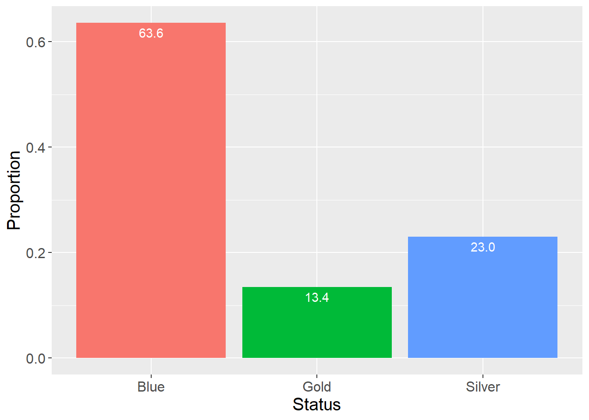
1.4.2 Histogram
- Non-overlapping categories of equal width from continuous data
- Shows frequency in each category
- Used to examine distribution of variable
Figure 1.2: Histogram 1
Code
airlinesat %>% # Dataset
# Begin plot with 'age' on x axis
ggplot(aes(x=age)) +
# Request histogram as geom, binwidth of 2, y represents density
geom_histogram(binwidth=2, aes(y=..density..),
color="black", fill="tan") +
# Creates normal curve overlay
stat_function(fun=function(x) dnorm(x, mean=mean(airlinesat$age),
sd=sd(airlinesat$age))) +
# Changes text size to be larger
theme(text=element_text(size=15)) +
# Adds axis labels
labs(x="Age", y="Density")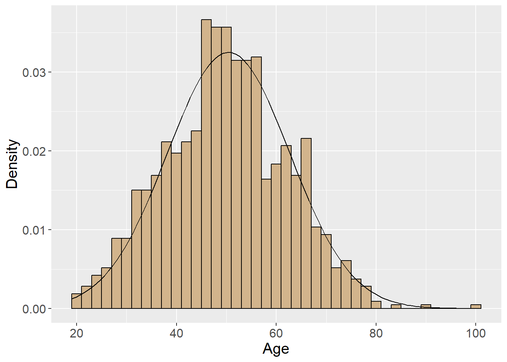
Figure 1.3: Histogram 2
Code
airlinesat %>% # Dataset
# Drop rows with missing values for variable 's1'
drop_na(s1) %>%
# Begin plot with 's1' on x axis
ggplot(aes(x=s1)) +
# Request histogram as geom, binwidth of 2, y represents density
# Pick different colors than previous histogram
geom_histogram(binwidth=2, aes(y=..density..),
color="saddlebrown", fill="orange") +
# Creates normal curve overlay
stat_function(fun=function(x) dnorm(x,
mean=mean(airlinesat$s1, na.rm=TRUE),
sd=sd(airlinesat$s1, na.rm=TRUE))) +
# Changes text size to be larger
theme(text=element_text(size=15)) +
# Adds axis labels
labs(x="Airline gets me there on time (Satisfaction)", y="Density")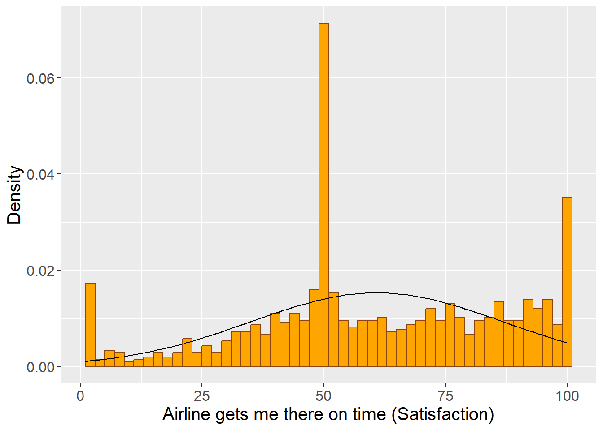
1.4.3 Box Plot
- Displays distribution of continuous data
- Conveys dispersion information
- Wider box = More dispersion
- Can help identify potential outliers
- How to interpret:
- Box in middle is the Interquartile Range
- Q3 (75th percentile) - Q1 (25th percentile)
- Line in middle is the median
- Upper/lower lines are upper/lower adjacent values
- Upper adjacent value is the largest observation that is smaller than Q3 + 1.5*IQR
- Lower adjacent value is the smallest observation that is larger than Q1 - 1.5*IQR
- Any observations above (below) the upper (lower) adjacent value are plotted separately, and could be outliers
- Box in middle is the Interquartile Range
Figure 1.4: Box Plot
Code
airlinesat %>% # Dataset
# Begin plot with no grouping x variable, age as continuous y variable
ggplot(aes(x="", y=age)) +
# Request boxplot as the geom, add whiskers with 'staplewidth'
geom_boxplot(staplewidth=1) +
# Changes text size to be larger
theme(text=element_text(size=15)) +
# Adds axis labels
labs(x="", y="Age")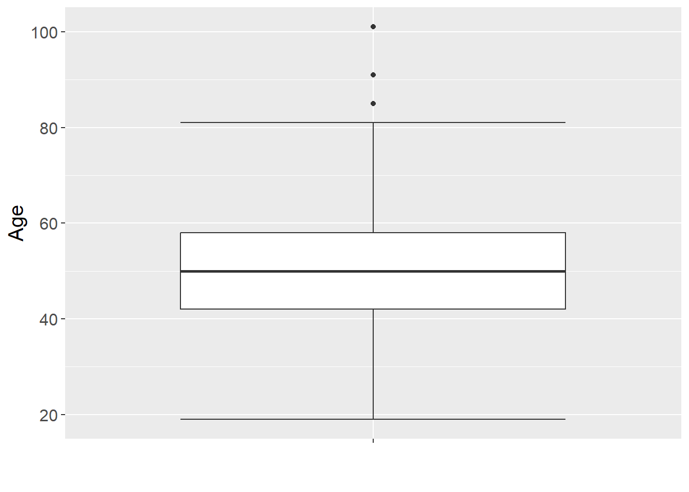
1.5 Univariate - Statistics
1.5.1 Measures of Centrality
- Values of a “typical” or “average” score
- Mean is the sum of all observations divided by the number of observations
- Only appropriate for continuous data
- Median separates highest and lowers 50% of observations
- Cannot be used on categorical data
1.5.2 Measures of Dispersion
Provide info about variability in the data
Range is the highest minus the lowest observation
- Simple, but includes extreme values
- Not appropriate for categorical data
Interquartile Range (IQR) is Q3 (75th percentile) - Q1 (25th percentile)
- Used in the Box Plot
- Not appropriate for categorical data
Standard Deviation
- Given by Equation 1.1 below
\[\begin{equation} s = \sqrt{\frac{\sum_{i=1}^{n}{(x_i - \bar{x})^2}}{n-1}} \tag{1.1} \end{equation}\]
- Only appropriate with continuous data
Table 1.2: Measures of Centrality and Dispersion
Code
| Variable | N | Mean | Std. Dev. | Min | Pctl. 25 | Pctl. 50 | Pctl. 75 | Max |
|---|---|---|---|---|---|---|---|---|
| age | 1065 | 50.42 | 12.27 | 19 | 42 | 50 | 58 | 101 |
| s1 | 1038 | 60.91 | 26.02 | 1 | 46 | 58 | 84 | 100 |
Table 1.3: Measures of Centrality and Dispersion
Code
# Using dplyr
airlinesat %>% # Data
# Select variables
select(age) %>%
# Summarise variables
summarise(n = n(),
mean = mean(age, na.rm = TRUE),
sd = sd(age, na.rm = TRUE),
median = median(age, na.rm = TRUE),
iqr = IQR(age, na.rm = TRUE),
min = min(age, na.rm = TRUE),
max = max(age, na.rm = TRUE)) %>%
# Pass to flextable for nicer output
flextable()n | mean | sd | median | iqr | min | max |
|---|---|---|---|---|---|---|
1,065 | 50.41972 | 12.27464 | 50 | 16 | 19 | 101 |
1.6 Bivariate - Graphs and Tables
1.6.1 Scatterplots
- Graphically shows how two continuous variables are related
- If dots appear in to follow a line, variables are likely related (see Figure 1.5)
- If dots appear random, variables are likely not related (see Figure 1.6)
- Not appropriate for categorical data (see Figure 1.7)
Figure 1.5: Scatterplot 1 with Fitted Line
Code
airlinesat %>% # Data
# Begin plot with x (s18) and y (s17) variables
ggplot(aes(x=s18, y=s17)) +
# Request scatter plot as geom
geom_point() +
# Request linear regression fitted line without confidence interval
geom_smooth(method="lm", se=FALSE) +
# Change text size to be larger
theme(text=element_text(size=15)) +
# Add axis labels
labs(x="Employees are service-oriented (s18)",
y="Employees are friendly (s17)")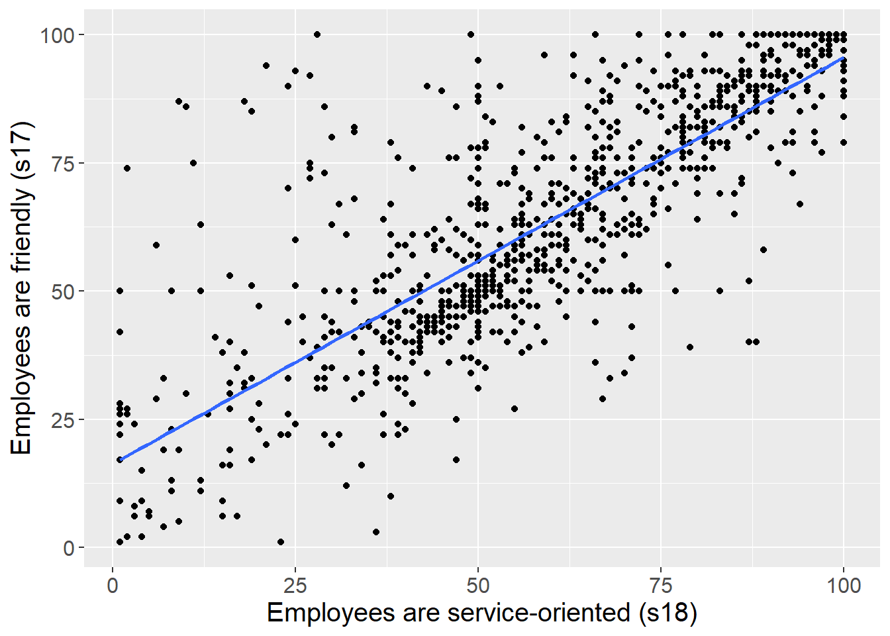
Figure 1.6: Scatterplot 2 without Fitted Line
Code
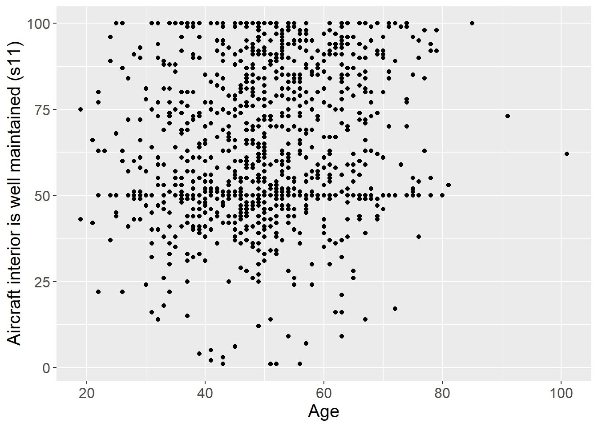
Figure 1.7: Scatterplot of Categorical Data
Code
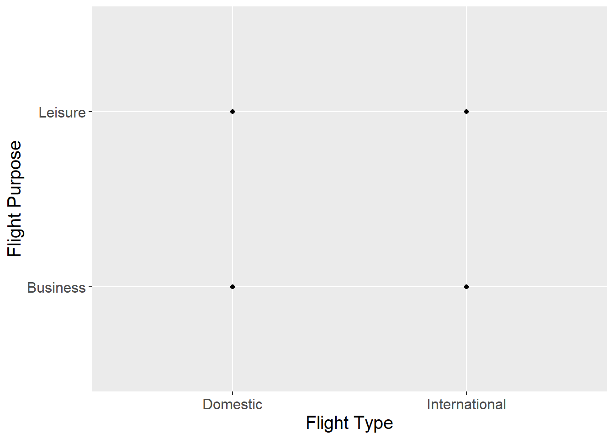
1.6.2 Crosstabs
- Show if and how two categorical variables are related
- Common to put “DV” in rows and “IV” in columns
- Can ask for \(\chi^2\) to test if for significant association
- Can also view it visually with a stacked bar chart (see Figure 1.8)
- Percentages represent column percentages
- Can also view it visually with separate bars for each category (see Figure 1.9)
- Bar height is percent of total
Table 1.4: Crosstab
Code
| flight_purpose | flight_type | Total | |
|---|---|---|---|
| Domestic | International | ||
| Business |
330 59.1 % |
195 38.5 % |
525 49.3 % |
| Leisure |
228 40.9 % |
312 61.5 % |
540 50.7 % |
| Total |
558 100 % |
507 100 % |
1065 100 % |
χ2=44.619 · df=1 · &phi=0.207 · p=0.000 |
Figure 1.8: Stacked Bar Chart
Code
airlinesat %>% # Data
# Group data by crosstab variables (column then row)
group_by(flight_type, flight_purpose) %>%
# Create variable 'n' for count of observations in each cell
summarise(n=n()) %>%
# Create column percentages
mutate(prop=100*n/sum(n)) %>%
# Begin plot: 'type' (x), 'prop' (y), 'purpose' (fill color)
ggplot(aes(x=flight_type, y=prop, fill=flight_purpose)) +
# Request column chart as geom
geom_col() +
# Adds data labels to middle of bars
geom_text(aes(label=format(round(prop,1),1)),
position=position_stack(vjust=0.5), color="white") +
# Changes test size to be larger
theme(text=element_text(size=15)) +
# Adds axis and legend labels
labs(x="Flight Type", y="Percent", fill="Flight Purpose")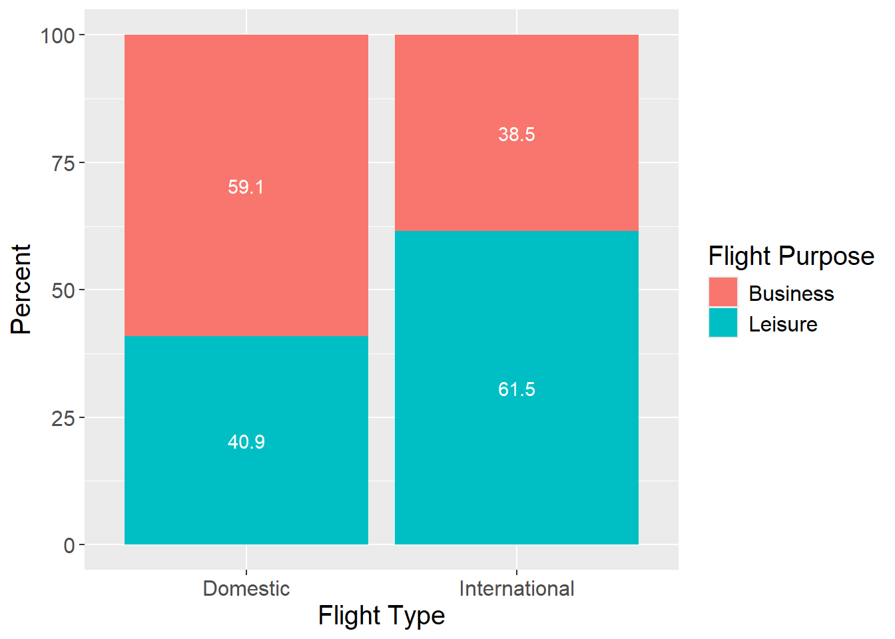
Figure 1.9: Side-by-Side Bar Chart
Code
airlinesat %>% # Data
# Group data by crosstab variables (column, row)
group_by(flight_type, flight_purpose) %>%
# Create variable 'n' for count of observations in each cell
# Drop grouping structure to get total percentages
summarise(n=n(), .groups="drop") %>%
# Create total percentages
mutate(prop=100*n/sum(n)) %>%
# Begin plot: 'type' (x), 'prop' (y), 'purpose' (fill color)
ggplot(aes(x=flight_type, y=prop, fill=flight_purpose)) +
# Request column chart as geom
# Position bars side-by-side instead of stacked
geom_col(position = position_dodge(width=.9)) +
# Add data labels to end of bars
geom_text(aes(label=format(round(prop,1),1)), vjust=1.5,
position=position_dodge(width=.9), color="white") +
# Changes test size to be larger
theme(text=element_text(size=15)) +
# Adds axis and legend labels
labs(x="Flight Type", y="Percent", fill="Flight Purpose")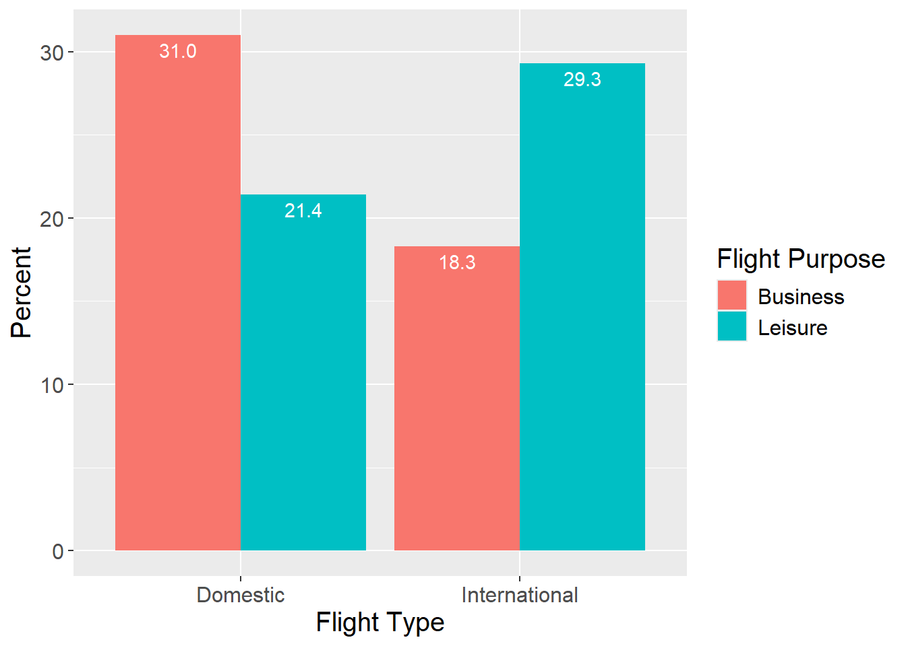
1.6.3 Box Plot
- Displays distribution of continuous data across classes of a categorical variable
Figure 1.10: Box Plot by Category
Code
airlinesat %>% # Data
# Begin plot with 'status' as grouping and 'age' as continuous variable
ggplot(aes(x=status, y=age)) +
# Request boxplot as the geom function with whiskers ('staplewidth')
geom_boxplot(staplewidth=1) +
# Changes text size to be larger
theme(text=element_text(size=15)) +
# Adds axis labels
labs(x="Status", y="Age")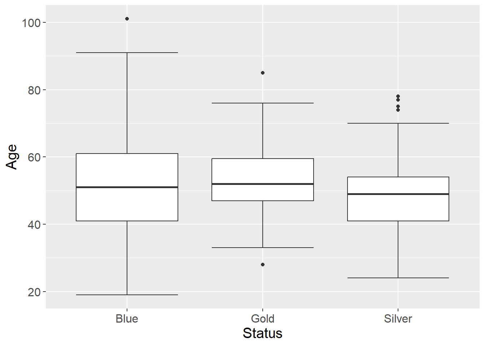
1.6.4 Bar Chart
- Displays mean (or some other value) of continuous data across classes of a categorical variable
Figure 1.11: Bar Chart by Category
Code
airlinesat %>% # Data
# Group data by 'status'
group_by(status) %>%
# Create variable 'mean' for mean of 'age' by 'status'
summarise(mean=mean(age)) %>%
# Begin plot with 'status' on x, 'mean' on y
ggplot(aes(x=status, y=mean)) +
# Requests column chart as geom
# Position bars side-by-side instead of stacked
# Set fill color to match status
geom_col(position=position_dodge(width=.9),
fill=c("midnightblue","gold","gray")) +
# Sets number of breaks on y-axis
scale_y_continuous(n.breaks=6) +
# Adds data labels to outside end of bars
geom_text(aes(label=format(round(mean,2),2)), vjust=-.5,
position=position_dodge(width=.9), color="black") +
# Changes test size to be larger
theme(text=element_text(size=15)) +
# Adds axis and legend labels
labs(x="Status", y="Mean of Age")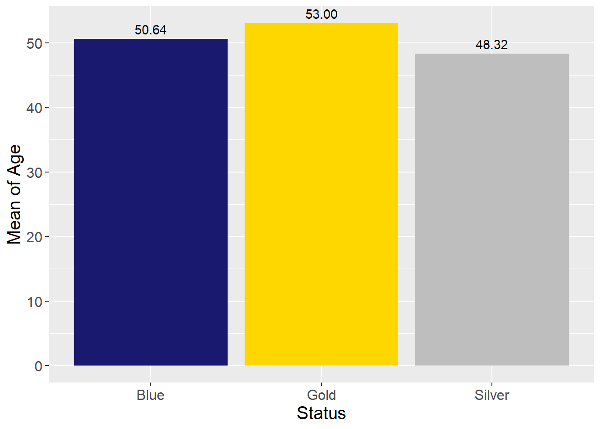
1.7 Statistics
1.7.1 Correlation
Provides a measure of linear association between two continuous variables
- Given by Equation 1.2 below
\[\begin{equation} r = \frac{\sum_{i=1}^{n}{(x_i - \bar{x})(y_i-\bar{y})}}{(n-1)s_xs_y} \tag{1.2} \end{equation}\]
- \(-1 \le r \le 1\)
Table 1.5: Correlation Matrix
Code
# Create dataframe of variables to include
corrvars <- airlinesat %>%
select(age, nflights, e7, s11)
# Use package sjPlot to easily create correlation matrix
tab_corr(corrvars,
na.deletion = "pairwise", # Delete obs if either variable is missing
corr.method = "pearson", # Choose Pearson correlation coefficient
show.p = TRUE, # Show asterisks for significant correlations
digits = 3, # Show three decimal points
triangle = "lower", # Show only lower triangle
fade.ns=FALSE) # Do not fade insignficant correlations| age | nflights | e7 | s11 | |
|---|---|---|---|---|
| age | ||||
| nflights | -0.116*** | |||
| e7 | -0.034 | -0.063* | ||
| s11 | 0.170*** | -0.106*** | 0.240*** | |
| Computed correlation used pearson-method with pairwise-deletion. | ||||
1.8 Suggested Readings
- R for Marketing Research and Analytics. 2nd Edition (2019). Chapman, Chris; McDonnel Feit, Elea
- BGSU Library Link:
https://librarysearch.bgsu.edu/permalink/01OHIOLINK_BGSU/i5ro6c/alma9926179903408506 - Chapter 3: Describing Data
- Chapter 4: Relationships Between Continuous Variables
- Chapter 5: Tables and Visualization
- BGSU Library Link:
- OpenIntro Statistics. 4th Edition (2019). Diez, David; Cetinkaya-Rundel, Mine; Barr, Christopher D.
- Available at OpenIntro.org:
https://www.openintro.org/book/os/ - Summarizing Data
- Available at OpenIntro.org:
- Multivariate Data Analysis. Hair, Joseph F.; Black, William C.; Babin, Barry J.; Anderson, Rolph E.
- 7th Edition: Search for “multivariate data analysis 7th edition hair”
- Graphical Examination of the Data (pp. 34-40)
- 5th Edition: Course reserves
- Graphical Examination of the Data (pp. 40-46)
- 7th Edition: Search for “multivariate data analysis 7th edition hair”